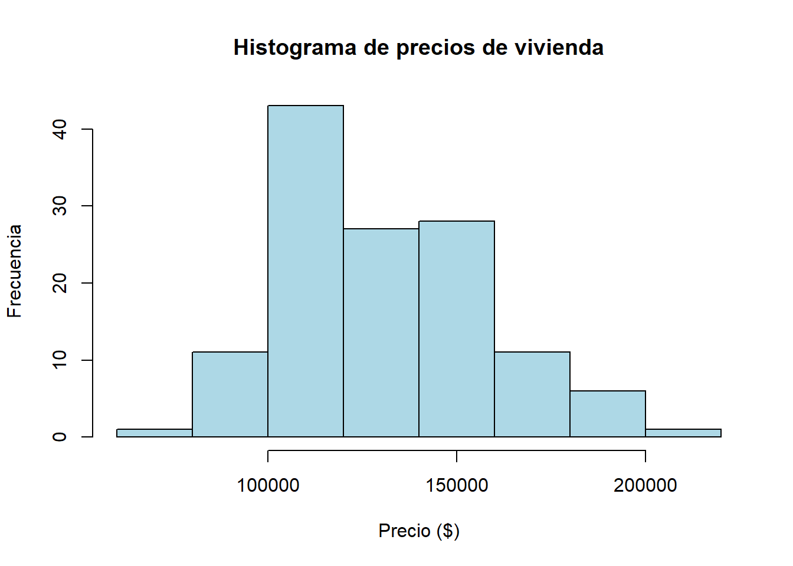
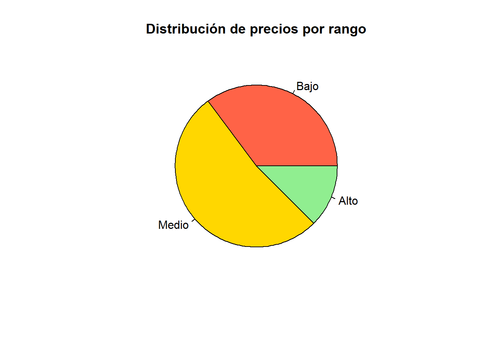
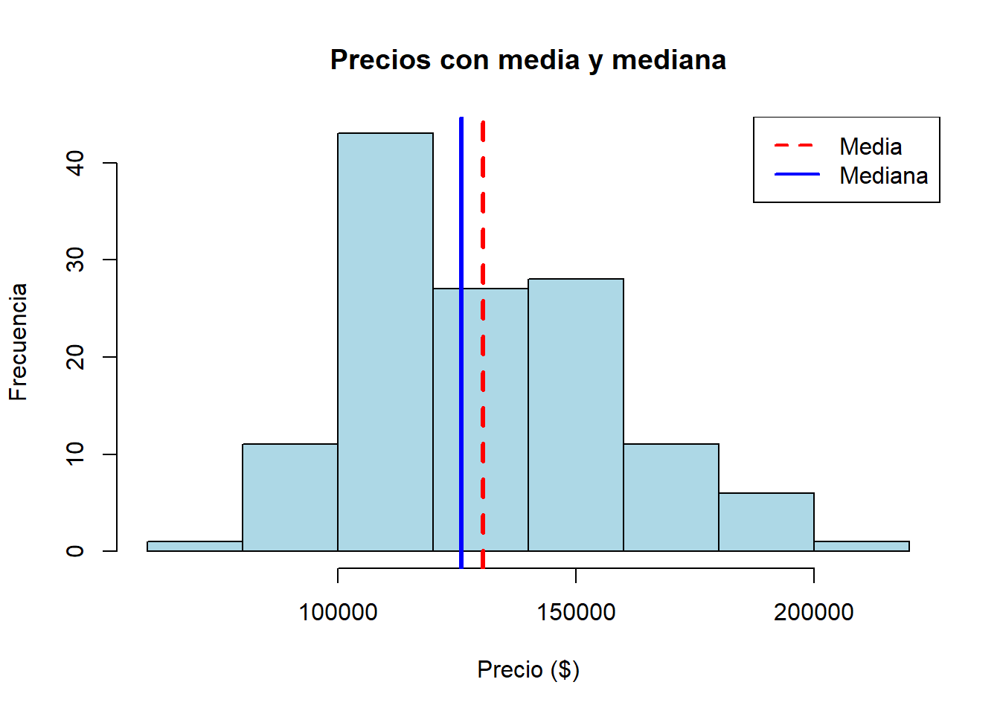
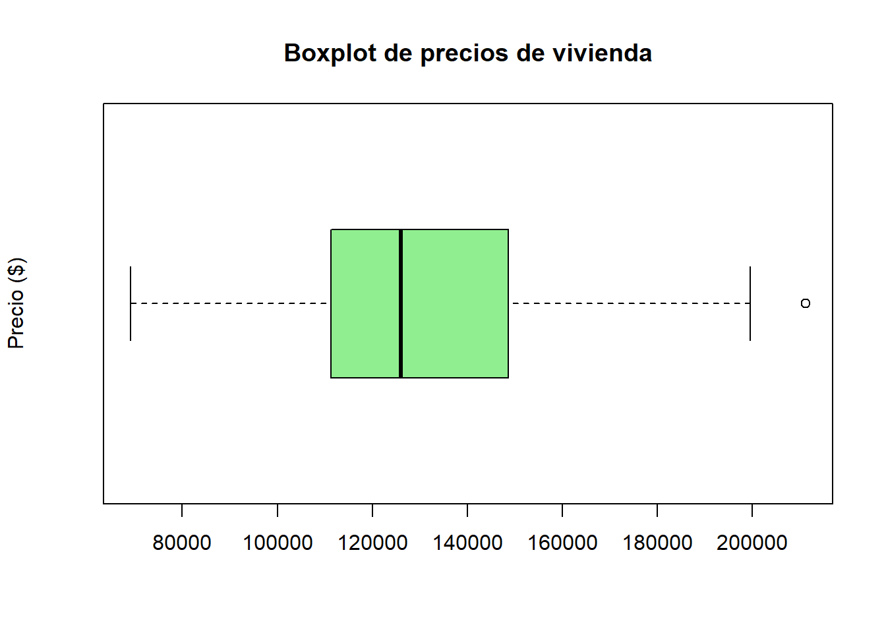

Code
# Si no la tienes instalada:
# install.packages("summarytools")
library(summarytools)
houses <- read.csv("../data/house-prices.csv")
# La variable cuantitativa continua que vamos a analizar
precios <- houses$PriceEsta guía recorre en orden el flujo completo de un análisis descriptivo — tabla → gráfica → tendencia central → dispersión → cuantiles → boxplot — usando el mismo dataset house-prices.csv de todos los Temas. No introduce conceptos nuevos: es un repaso integrado, pensado para que llegues al examen habiendo hecho el recorrido completo de principio a fin, en vez de tema por tema aislado.
Ejecuta cada bloque en tu propia sesión de RStudio, en orden. La segunda mitad son preguntas de estudio conceptuales con respuesta desarrollada: son el tipo de pregunta que puede aparecer en el examen pidiendo justificación escrita, no solo un número.
Usaremos summarytools, la librería que ya conociste en el Tema 2 como la “Manera 5” de construir tablas de frecuencia:
descr() produce un resumen numérico completo de una variable cuantitativa de una sola vez — media, desviación estándar, cuartiles, asimetría y curtosis incluidas:
Descriptive Statistics
precios
N: 128
precios
----------------- -----------
Mean 130427.34
Std.Dev 26868.77
Min 69100.00
Q1 111250.00
Median 125950.00
Q3 148600.00
Max 211200.00
MAD 27798.75
IQR 36925.00
CV 0.21
Skewness 0.46
SE.Skewness 0.21
Kurtosis -0.10
N.Valid 128.00
N 128.00
Pct.Valid 100.00descr() te da en una sola salida casi todo lo que calculaste a mano en los Temas 4 a 7. Úsalo para verificar tus cálculos manuales, no para reemplazarlos: en el examen te pueden pedir el procedimiento, no solo el resultado. Ver más trucos →
El histograma es una serie de rectángulos cuyo ancho es proporcional al rango de valores dentro de una clase, y cuya altura es proporcional al número de elementos que caen en esa clase:

El diagrama de pastel se usa principalmente para variables cualitativas. Para aplicarlo a una variable cuantitativa como Price, primero hay que agrupar o categorizar los datos en intervalos — exactamente la operación de recodificación que viste en el Tema 1:
categorias_precio
Bajo Medio Alto
45 67 16 
Con breaks = 3, R parte el rango completo de precios en tres intervalos de igual ancho (no de igual cantidad de casas): quedan 45 casas en “Bajo”, 67 en “Medio” y solo 16 en “Alto”. Esa concentración desigual ya te está diciendo algo sobre la forma de la distribución — que confirmarás formalmente con la asimetría más abajo.
[1] "La media es: 130427.34"[1] "La mediana es: 125950"[1] "La moda es: 103200"Aquí la “moda” que devuelve el código es engañosa: en Price hay 123 valores distintos entre 128 casas, y el valor más repetido aparece solo 2 veces — empatado con otros 4 valores. which.max() devuelve arbitrariamente el primero de esos empates, sin avisarte.
La moda es útil en variables discretas con pocos valores (como Bedrooms), no en continuas casi sin repeticiones:
Aquí sí: 3 habitaciones es la moda clara, con 67 de 128 casas. Si en el examen te piden la moda de una variable continua, vale la pena señalar esta limitación en vez de reportar un número sin contexto.
hist(precios, col = "lightblue",
main = "Precios con media y mediana",
xlab = "Precio ($)", ylab = "Frecuencia")
abline(v = mean(precios), col = "red", lwd = 3, lty = 2)
abline(v = median(precios), col = "blue", lwd = 3, lty = 1)
legend("topright", legend = c("Media", "Mediana"),
col = c("red", "blue"), lty = c(2, 1), lwd = 2)
La media (≈$130,427) queda a la derecha de la mediana ($125,950). Como aprendiste en el Tema 4, esa es la firma de una distribución sesgada a la derecha: unas pocas casas caras jalan el promedio hacia arriba, mientras la mediana se queda donde está el grueso de los datos.
[1] "El rango es: 142100"[1] "La varianza es: 721930821.24"[1] "La desviacion estandar es: 26868.77"[1] "El Coeficiente de Variacion es: 20.6 %"Fíjate en las unidades: la varianza (≈721,930,821) está en dólares al cuadrado, una unidad sin interpretación práctica. Por eso casi siempre se reporta la desviación estándar (≈$26,869, en dólares) y no la varianza. El CV (≈20.6%) no tiene unidades en absoluto, que es justo lo que lo hace comparable entre variables distintas.
Los cuantiles dividen los datos en partes iguales. Los más usados son los cuartiles, que separan los datos en cuatro partes (25%, 50%, 75%).
0% 25% 50% 75% 100%
69100 111325 125950 148250 211200 El boxplot encierra el rango intercuartílico (el 50% central de los datos) en una caja que contiene la mediana, y extiende “bigotes” hacia los valores extremos:

\(Q_1 =\) $111,325, \(Q_2 =\) $125,950 y \(Q_3 =\) $148,250, así que el RIC \(=\) $36,925. Las vallas quedan en $55,937.5 y $203,637.5 — y hay exactamente una casa por encima de la valla superior (la casa 104, de $211,200), que R dibuja como punto aislado. Es un atípico real de este dataset, no un artefacto.
Conviene mirar ambas gráficas juntas, porque cuentan historias complementarias:
En resumen: usa el histograma para entender cómo se agrupan las masas de datos a simple vista, y el boxplot para un análisis de dispersión riguroso y para detectar anomalías.
Estas cinco preguntas son del tipo que pide justificación escrita, no solo un cálculo. Intenta responderlas por tu cuenta antes de abrir la respuesta.
Pregunta: en una planta de envasado, el gerente registra diariamente dos datos: el volumen exacto de líquido introducido en cada botella, y la cantidad de botellas con la tapa mal colocada por cada lote. ¿Cómo se clasifican estas dos variables y por qué es fundamental diferenciarlas?
Conexión con este dataset: Bedrooms y Offers son discretas (conteos); Price y SqFt son continuas (mediciones).
Pregunta: en una empresa de 10 personas, nueve empleados ganan entre $40,000 y $50,000 anuales. El décimo es el CEO, que gana $500,000. Si se quiere publicar una cifra que represente el “salario típico” para atraer nuevos empleados, ¿se debe usar la media o la mediana?
Se debe usar la mediana.
Conexión con este dataset: es el mismo fenómeno, más suave, que ya viste arriba — la casa de $211,200 empuja la media de Price por encima de la mediana.
Pregunta: debe comprar cables de acero para un puente. El Proveedor X ofrece cables con resistencia media de 10,000 kg y desviación estándar de 20 kg. El Proveedor Y ofrece la misma resistencia media de 10,000 kg, pero con desviación estándar de 500 kg. ¿Cuál elegir y por qué?
Se debe elegir al Proveedor X.
La desviación estándar mide qué tan dispersos están los datos alrededor del promedio.
La lección de fondo: dos distribuciones con la misma media pueden implicar riesgos completamente distintos. En decisiones de seguridad, la dispersión suele importar más que el promedio.
Pregunta: una estudiante obtuvo 720 puntos en un examen estandarizado nacional, y le informan que su calificación está en el “Percentil 85”. ¿Cómo se interpreta correctamente ese resultado?
Los percentiles dividen los datos ordenados en cien partes iguales, y sirven para conocer la posición relativa de una observación.
Estar en el Percentil 85 significa que la calificación de 720 puntos es mayor a la puntuación obtenida por el 85% de todas las personas que presentaron el examen. Indica un alto rendimiento: solo el 15% restante obtuvo una calificación superior.
Error común a evitar: el percentil 85 no significa “sacó 85 puntos” ni “acertó el 85% de las preguntas” — se refiere a su posición frente a los demás, no a su puntaje absoluto.
Pregunta: al comparar dos procesos de manufactura con diagramas de caja, se observa que (1) el Proceso A tiene una caja muy ancha, la mediana desplazada hacia el lado izquierdo de la caja, y el bigote derecho muy largo; (2) el Proceso B tiene una caja muy estrecha, la mediana centrada, pero muestra tres asteriscos aislados por encima del bigote superior. Describa la variabilidad y simetría de cada proceso.
Proceso A: presenta alta variabilidad (caja ancha = rango intercuartílico grande). La distribución está fuertemente sesgada a la derecha (asimetría positiva), lo cual se evidencia por dos señales que apuntan en la misma dirección: la mediana no está en el centro sino a la izquierda, y el bigote derecho es prolongado — hay datos dispersos hacia valores altos.
Proceso B: es un proceso altamente simétrico y consistente: el 50% central se concentra en una caja muy estrecha y la mediana está centrada. Los asteriscos son valores atípicos: eventos aislados que se salen del patrón general y deben investigarse individualmente (errores o fallas puntuales), pero que no cambian el hecho de que el cuerpo principal del proceso es estable.
La lección: un proceso puede tener atípicos y aun así ser más confiable que otro sin ellos. La presencia de outliers no es, por sí sola, evidencia de un proceso malo.
Antes del examen, comprueba que puedes hacer todo esto sin mirar la guía:
Si algún punto de la lista te costó, vuelve al Tema correspondiente del Módulo 1 antes del examen — cada punto de arriba corresponde directamente a un Tema (1 y 2 → Temas 2-3, 3 → Tema 4, 4 → Tema 5, 5 y 6 → Tema 6, 7 → Tema 1).
---
title: "Preparación del Examen 1 · Guía práctica de análisis estadístico en R"
---
::: {.hero-motivacion}
## 🎯 Todo el Módulo 1, en una sola pasada
Esta guía recorre en orden el flujo completo de un análisis descriptivo — tabla → gráfica → tendencia central → dispersión → cuantiles → boxplot — usando el mismo dataset `house-prices.csv` de todos los Temas. No introduce conceptos nuevos: es un repaso integrado, pensado para que llegues al examen habiendo hecho el recorrido completo de principio a fin, en vez de tema por tema aislado.
:::
::: {.callout-note}
## Cómo usar esta guía
Ejecuta cada bloque en tu propia sesión de RStudio, en orden. La segunda mitad son **preguntas de estudio conceptuales** con respuesta desarrollada: son el tipo de pregunta que puede aparecer en el examen pidiendo justificación escrita, no solo un número.
:::
## Preparación del entorno
Usaremos `summarytools`, la librería que ya conociste en el Tema 2 como la "Manera 5" de construir tablas de frecuencia:
```{r}
#| message: false
# Si no la tienes instalada:
# install.packages("summarytools")
library(summarytools)
houses <- read.csv("../data/house-prices.csv")
# La variable cuantitativa continua que vamos a analizar
precios <- houses$Price
```
## 1. Representación tabular y gráfica
### 1.1 Representación tabular
`descr()` produce un resumen numérico completo de una variable cuantitativa de una sola vez — media, desviación estándar, cuartiles, asimetría y curtosis incluidas:
```{r}
descr(precios)
```
::: {.callout-tip}
## 💡 Truco de interpretación
`descr()` te da en una sola salida casi todo lo que calculaste a mano en los Temas 4 a 7. Úsalo para **verificar** tus cálculos manuales, no para reemplazarlos: en el examen te pueden pedir el procedimiento, no solo el resultado. [Ver más trucos →](../recursos.qmd)
:::
### 1.2 Representación gráfica (histograma y diagrama de pastel)
El histograma es una serie de rectángulos cuyo ancho es proporcional al rango de valores dentro de una clase, y cuya altura es proporcional al número de elementos que caen en esa clase:
```{r}
hist(precios,
main = "Histograma de precios de vivienda",
xlab = "Precio ($)",
ylab = "Frecuencia",
col = "lightblue")
```
::: {.callout-important}
## Nota sobre el diagrama de pastel
El diagrama de pastel se usa principalmente para variables **cualitativas**. Para aplicarlo a una variable cuantitativa como `Price`, primero hay que agrupar o categorizar los datos en intervalos — exactamente la operación de recodificación que viste en el Tema 1:
:::
```{r}
# Categorizar la variable cuantitativa en 3 grupos
categorias_precio <- cut(precios, breaks = 3, labels = c("Bajo", "Medio", "Alto"))
table(categorias_precio)
pie(table(categorias_precio),
main = "Distribución de precios por rango",
col = c("tomato", "gold", "lightgreen"))
```
::: {.ficha-resultado}
Con `breaks = 3`, R parte el rango completo de precios en tres intervalos **de igual ancho** (no de igual cantidad de casas): quedan 45 casas en "Bajo", 67 en "Medio" y solo 16 en "Alto". Esa concentración desigual ya te está diciendo algo sobre la forma de la distribución — que confirmarás formalmente con la asimetría más abajo.
:::
## 2. Medidas de tendencia central
- **Media:** el promedio aritmético de las observaciones.
- **Mediana:** el valor exactamente en el centro cuando ordenamos los datos de menor a mayor.
- **Moda:** el valor que ocurre con mayor frecuencia en la muestra.
```{r}
media <- mean(precios)
print(paste("La media es:", round(media, 2)))
mediana <- median(precios)
print(paste("La mediana es:", round(mediana, 2)))
# R no tiene una función directa para la moda: se construye desde la tabla de frecuencias
tabla_frecuencias <- table(precios)
moda <- names(tabla_frecuencias)[which.max(tabla_frecuencias)]
print(paste("La moda es:", moda))
```
::: {.callout-important}
## Cuidado con la moda en variables continuas
Aquí la "moda" que devuelve el código es engañosa: en `Price` hay **123 valores distintos entre 128 casas**, y el valor más repetido aparece solo 2 veces — empatado con otros 4 valores. `which.max()` devuelve arbitrariamente el primero de esos empates, sin avisarte.
La moda es útil en variables **discretas con pocos valores** (como `Bedrooms`), no en continuas casi sin repeticiones:
```{r}
table(houses$Bedrooms)
```
Aquí sí: 3 habitaciones es la moda clara, con 67 de 128 casas. Si en el examen te piden la moda de una variable continua, vale la pena señalar esta limitación en vez de reportar un número sin contexto.
:::
### Histograma con media y mediana superpuestas
```{r}
hist(precios, col = "lightblue",
main = "Precios con media y mediana",
xlab = "Precio ($)", ylab = "Frecuencia")
abline(v = mean(precios), col = "red", lwd = 3, lty = 2)
abline(v = median(precios), col = "blue", lwd = 3, lty = 1)
legend("topright", legend = c("Media", "Mediana"),
col = c("red", "blue"), lty = c(2, 1), lwd = 2)
```
::: {.ficha-resultado}
La media (≈\$130,427) queda a la **derecha** de la mediana (\$125,950). Como aprendiste en el Tema 4, esa es la firma de una distribución sesgada a la derecha: unas pocas casas caras jalan el promedio hacia arriba, mientras la mediana se queda donde está el grueso de los datos.
:::
## 3. Medidas de dispersión
- **Rango:** la diferencia entre el valor más grande y el más pequeño.
- **Varianza:** el promedio de los cuadrados de las desviaciones respecto a la media.
- **Desviación estándar:** la raíz cuadrada positiva de la varianza — devuelve la dispersión en las unidades originales.
- **Coeficiente de variación:** la desviación estándar como porcentaje de la media, para comparar variabilidad relativa.
```{r}
rango <- max(precios) - min(precios)
print(paste("El rango es:", rango))
varianza <- var(precios)
print(paste("La varianza es:", round(varianza, 2)))
desviacion <- sd(precios)
print(paste("La desviacion estandar es:", round(desviacion, 2)))
cv <- (desviacion / media) * 100
print(paste("El Coeficiente de Variacion es:", round(cv, 2), "%"))
```
::: {.callout-note}
## Lo que deberías notar
Fíjate en las unidades: la varianza (≈721,930,821) está en **dólares al cuadrado**, una unidad sin interpretación práctica. Por eso casi siempre se reporta la desviación estándar (≈\$26,869, en dólares) y no la varianza. El CV (≈20.6%) no tiene unidades en absoluto, que es justo lo que lo hace comparable entre variables distintas.
:::
## 4. Cuantiles y boxplot
Los cuantiles dividen los datos en partes iguales. Los más usados son los cuartiles, que separan los datos en cuatro partes (25%, 50%, 75%).
```{r}
cuantiles <- quantile(precios)
print(cuantiles)
```
El boxplot encierra el rango intercuartílico (el 50% central de los datos) en una caja que contiene la mediana, y extiende "bigotes" hacia los valores extremos:
```{r}
boxplot(precios,
main = "Boxplot de precios de vivienda",
col = "lightgreen",
ylab = "Precio ($)",
horizontal = TRUE) # horizontal facilita la lectura
```
::: {.ficha-resultado}
$Q_1 =$ \$111,325, $Q_2 =$ \$125,950 y $Q_3 =$ \$148,250, así que el RIC $=$ \$36,925. Las vallas quedan en \$55,937.5 y \$203,637.5 — y hay **exactamente una casa** por encima de la valla superior (la casa 104, de \$211,200), que R dibuja como punto aislado. Es un atípico real de este dataset, no un artefacto.
:::
## 5. ¿Cómo se complementan el histograma y el boxplot?
Conviene mirar ambas gráficas juntas, porque cuentan historias complementarias:
1. **Forma general vs. resumen exacto.** El histograma es ideal para ver la *forma* de la distribución (campana, asimétrica, con varios picos). Pero agrupa los datos en barras, lo que hace perder el detalle exacto de dónde están los cuartiles.
2. **Detección de valores atípicos.** El boxplot esconde los picos (las modas), pero es la herramienta perfecta para identificar de inmediato la mediana, la dispersión exacta del 50% central, y sobre todo, los valores extremos representados como puntos aislados fuera de los bigotes.
**En resumen:** usa el histograma para entender cómo se agrupan las masas de datos a simple vista, y el boxplot para un análisis de dispersión riguroso y para detectar anomalías.
---
# 📝 Preguntas de estudio conceptuales
Estas cinco preguntas son del tipo que pide **justificación escrita**, no solo un cálculo. Intenta responderlas por tu cuenta antes de abrir la respuesta.
## Tema 1 · Variables cuantitativas: discretas vs. continuas
**Pregunta:** en una planta de envasado, el gerente registra diariamente dos datos: el volumen exacto de líquido introducido en cada botella, y la cantidad de botellas con la tapa mal colocada por cada lote. ¿Cómo se clasifican estas dos variables y por qué es fundamental diferenciarlas?
::: {.callout-tip collapse="true"}
## Ver respuesta
- **Volumen de líquido (continua):** es el resultado de una *medición* y, teóricamente, puede tomar cualquier valor dentro de un intervalo (2.001 litros, 2.0015 litros...), dependiendo de la precisión del instrumento.
- **Cantidad de botellas defectuosas (discreta):** resulta de un *conteo*. Solo puede tomar valores enteros (0, 1, 2, 3 botellas) y hay "saltos" entre sus posibles valores.
- **Por qué importa:** la distinción define el tratamiento matemático posterior. Las variables discretas usan sumas (funciones de masa de probabilidad); las continuas usan integrales y cálculo (funciones de densidad) — algo que verás en detalle en el Módulo 2.
*Conexión con este dataset:* `Bedrooms` y `Offers` son discretas (conteos); `Price` y `SqFt` son continuas (mediciones).
:::
## Tema 2 · Tendencia central y valores atípicos
**Pregunta:** en una empresa de 10 personas, nueve empleados ganan entre \$40,000 y \$50,000 anuales. El décimo es el CEO, que gana \$500,000. Si se quiere publicar una cifra que represente el "salario típico" para atraer nuevos empleados, ¿se debe usar la media o la mediana?
::: {.callout-tip collapse="true"}
## Ver respuesta
**Se debe usar la mediana.**
- La media aritmética es muy sensible a valores extremos. El salario de \$500,000 jalaría el promedio drásticamente hacia arriba, distorsionando la realidad de la empresa y dando una cifra irreal para un nuevo empleado.
- La mediana, al ser el valor que divide la muestra ordenada exactamente a la mitad, no se ve afectada por valores extremos. Es una medida **robusta**, y reflejaría fielmente el centro de los salarios de los empleados regulares.
*Conexión con este dataset:* es el mismo fenómeno, más suave, que ya viste arriba — la casa de \$211,200 empuja la media de `Price` por encima de la mediana.
:::
## Tema 3 · Dispersión y toma de decisiones en ingeniería
**Pregunta:** debe comprar cables de acero para un puente. El Proveedor X ofrece cables con resistencia media de 10,000 kg y desviación estándar de 20 kg. El Proveedor Y ofrece la misma resistencia media de 10,000 kg, pero con desviación estándar de 500 kg. ¿Cuál elegir y por qué?
::: {.callout-tip collapse="true"}
## Ver respuesta
**Se debe elegir al Proveedor X.**
La desviación estándar mide qué tan dispersos están los datos alrededor del promedio.
- El **Proveedor Y** tiene alta variabilidad (500 kg): el comportamiento de sus cables es inconsistente. Aunque el promedio sea bueno, un cable individual podría resistir muy por debajo de los 10,000 kg — inaceptable para la seguridad de un puente.
- El **Proveedor X** tiene baja variabilidad (20 kg): sus productos son mucho más uniformes, predecibles y confiables.
La lección de fondo: **dos distribuciones con la misma media pueden implicar riesgos completamente distintos.** En decisiones de seguridad, la dispersión suele importar más que el promedio.
:::
## Tema 4 · Medidas de posición relativa (percentiles)
**Pregunta:** una estudiante obtuvo 720 puntos en un examen estandarizado nacional, y le informan que su calificación está en el "Percentil 85". ¿Cómo se interpreta correctamente ese resultado?
::: {.callout-tip collapse="true"}
## Ver respuesta
Los percentiles dividen los datos ordenados en cien partes iguales, y sirven para conocer la posición relativa de una observación.
Estar en el **Percentil 85** significa que la calificación de 720 puntos es mayor a la puntuación obtenida por el **85% de todas las personas** que presentaron el examen. Indica un alto rendimiento: solo el 15% restante obtuvo una calificación superior.
**Error común a evitar:** el percentil 85 *no* significa "sacó 85 puntos" ni "acertó el 85% de las preguntas" — se refiere a su posición frente a los demás, no a su puntaje absoluto.
:::
## Tema 5 · Interpretación de boxplots y asimetría
**Pregunta:** al comparar dos procesos de manufactura con diagramas de caja, se observa que (1) el Proceso A tiene una caja muy ancha, la mediana desplazada hacia el lado izquierdo de la caja, y el bigote derecho muy largo; (2) el Proceso B tiene una caja muy estrecha, la mediana centrada, pero muestra tres asteriscos aislados por encima del bigote superior. Describa la variabilidad y simetría de cada proceso.
::: {.callout-tip collapse="true"}
## Ver respuesta
**Proceso A:** presenta **alta variabilidad** (caja ancha = rango intercuartílico grande). La distribución está fuertemente **sesgada a la derecha** (asimetría positiva), lo cual se evidencia por dos señales que apuntan en la misma dirección: la mediana no está en el centro sino a la izquierda, y el bigote derecho es prolongado — hay datos dispersos hacia valores altos.
**Proceso B:** es un proceso **altamente simétrico y consistente**: el 50% central se concentra en una caja muy estrecha y la mediana está centrada. Los asteriscos son **valores atípicos**: eventos aislados que se salen del patrón general y deben investigarse individualmente (errores o fallas puntuales), pero que no cambian el hecho de que el cuerpo principal del proceso es estable.
**La lección:** un proceso puede tener atípicos y aun así ser más confiable que otro sin ellos. La presencia de outliers no es, por sí sola, evidencia de un proceso malo.
:::
---
## ✅ Autoevaluación final
Antes del examen, comprueba que puedes hacer todo esto **sin mirar la guía**:
1. Cargar un CSV y producir un resumen tabular completo de una variable cuantitativa.
2. Construir un histograma y explicar qué muestra que un boxplot no muestra (y viceversa).
3. Calcular media, mediana y moda — y decir cuándo cada una es la medida apropiada.
4. Calcular rango, varianza, desviación estándar y CV — y explicar por qué el CV permite comparar variables en unidades distintas.
5. Calcular los cuartiles, el RIC y las vallas, e identificar valores atípicos justificando el criterio.
6. Ver un boxplot y describir en palabras su variabilidad, simetría y atípicos.
7. Clasificar cualquier variable como nominal, ordinal, discreta o continua, con justificación.
::: {.callout-note}
## Siguiente paso
Si algún punto de la lista te costó, vuelve al Tema correspondiente del Módulo 1 antes del examen — cada punto de arriba corresponde directamente a un Tema (1 y 2 → Temas 2-3, 3 → Tema 4, 4 → Tema 5, 5 y 6 → Tema 6, 7 → Tema 1).
:::